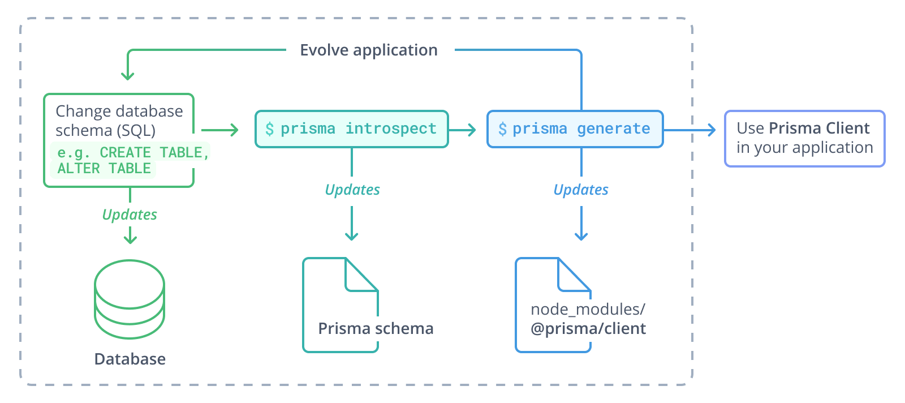

Respeite seus Dados!
Prisma, o ORM de nova geração para node.js fortemente tipado.
Alan Jhonnes

Arquiteto de Sistemas
Prisma
- Prisma Client
- Prisma Migrate
- Prisma Studio
- Prisma CLI
- Prisma Query Engine
Objetivos
- Developer Experience
- Single source of truth
- Restrições saudáveis
- Abstração que faz a coisa certa ser fácil
- Queries fortemente tipadas
- Menos boilerplate
- Auto-complete no editor de código
Produtividade
Prisma schema

Prisma Migrate
Workflow de desenvolvimento
- Alteração de schema.prisma
- prisma db push
- prisma migrate dev
- git commit
Schema Drift
- Shadow Database
- Detecção de drifts
Prisma Client
Introspection

Introspection
Query Engine
Prisma Studio
Limitações
- Transactions longas
- Modelos precisam ter PKs ou índice único
- Manipulação de conexão com o banco de dados
Bancos suportados
- PostgreSQL
- MySQL
- SQLite
- SQL Server - Preview
- MongoDB - Early Access